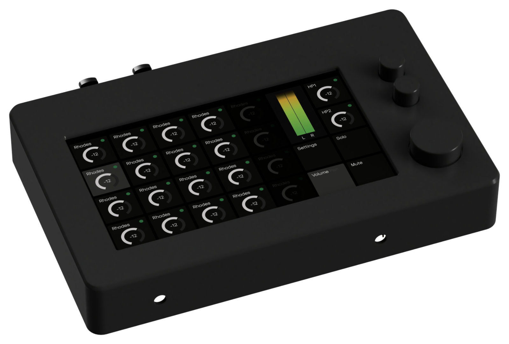

Monitor Two

About
A low latency personal monitor mixer with Dante, AES67 and Milan support, two independent outputs, and a high resolution OLED touchscreen.
- Channels
- 64 (32)
- Latency
- < 1 ms
- Networking
- Dante, AES67, Milan
- MSRP (USD)
- $2,500+$50 activation fee for Milan support
- Availability
- 2027
Specifications
Network
- I/O count
- 64 channels of Dante/AES6732 channels of Milan‡
- Latency
- < 1 ms end-to-end, analog in to analog out*
- Ethernet
- Locking etherCON network connectors
- Remote control
- OCA (AES70), OSC and NMOS (IS-04, IS-05 and IS-12) control of all parametersRemote control and orchestration appsInput label synchronisation with Pro Tools
Audio
- Converters
- AKM AK4499EX/AK4191 64-bit DACs with external jitter cleaner
- Sample rates
- 44.1 / 48 / 88.2 / 96 kHz†
- Headphone amp
- High output amplifier suitable for driving a variety of headphone impedances
- Outputs
- Two independent headphone outputsXLR line output mirroring second headphoneBoth mixes also available as Dante network outputs
User Interface
- Display
- 7″ OLED high resolution touchscreen with Gorilla GlassThree assignable rotary encoders
- Groups
- 8 channel groups (VCAs), freely assignable across channels
Physical
- Dimensions
- 223 × 138 × 35 mm
- Power
- PoE 802.3at and/or 12 VDC barrel jack
- Chassis
- Anodised aluminium3/8″ thread mount
* Measured an end-to-end analog latency of approximately 0.8 ms using Pro Tools | HDX and Pro Tools | MTRX at 96 kHz (including Dante latency of 0.25 ms).
† 44.1 kHz and 88.2 kHz sample rates only available in Dante mode. High sample rates halve Dante channel count to 32. Milan supports 32 channels at all sample rates.
‡ Milan requires a one-time activation fee ($50 USD).